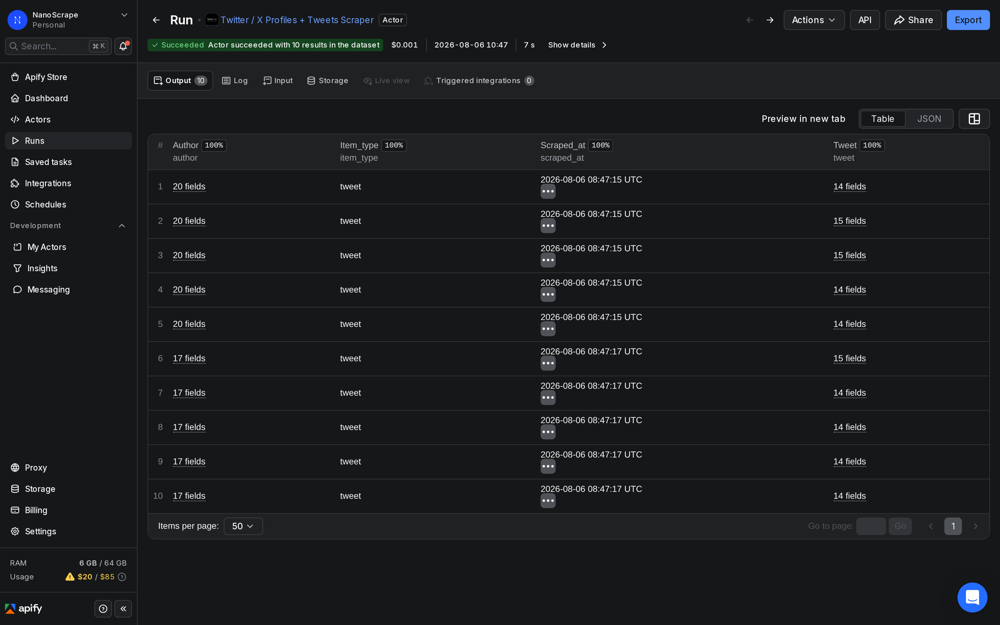
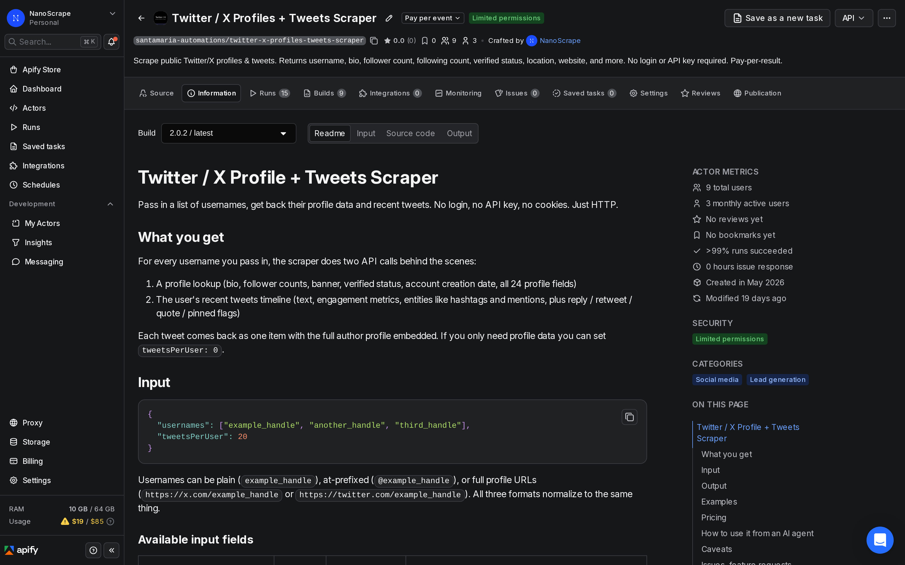
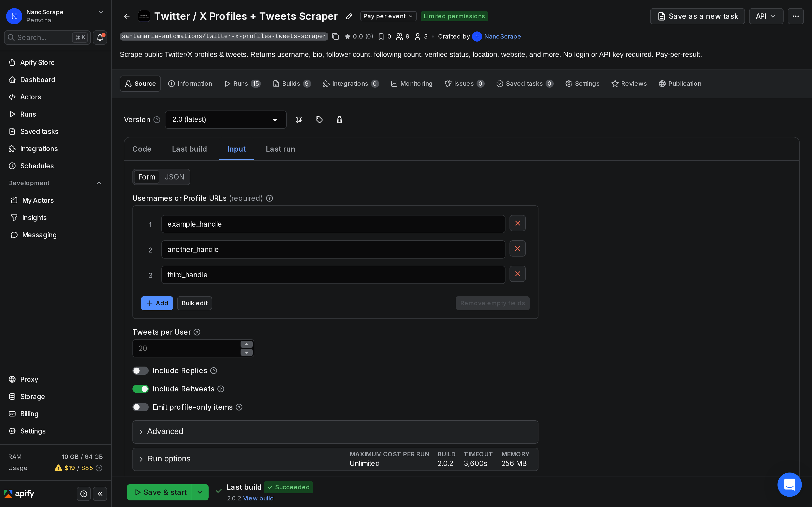
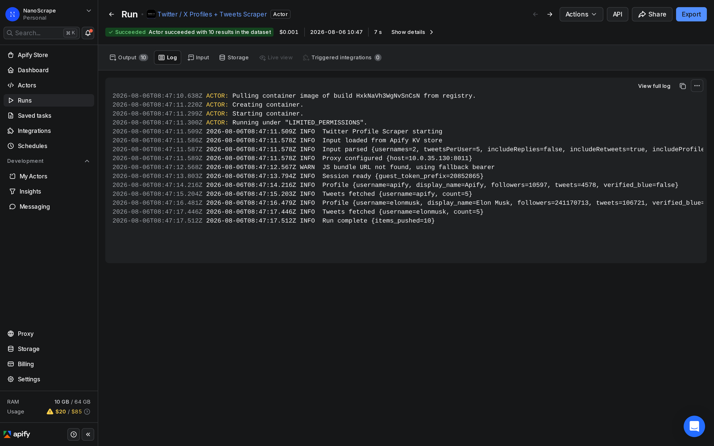

How to Scrape Tweets Without the Twitter/X API
The X API Basic tier costs $100 per month and limits you to 10,000 tweet reads, that works out to $0.01 per tweet. This guide shows a cheaper path: a pay-per-result scraper on Apify that returns full tweet text, engagement counts, hashtags, mentions, and expanded URLs for any public account. No API key. No OAuth app. No monthly commitment. A single account's last 20 tweets runs you about $0.016.

In this tutorial
Why not the X API?
The official Twitter/X API restructured its access tiers in 2023. Today, any meaningful tweet collection sits behind a paid wall:
- Free tier: write-only access, no reads.
- Basic tier: $100/month for 10,000 tweet reads. At scale that is $0.01 per tweet.
- Pro tier: $5,000/month for 1 million tweet reads.
For researchers, marketers, and analysts who need a few hundred to a few thousand tweets, the Basic tier's fixed monthly fee is hard to justify. The NanoScrape scraper charges $0.0003 per tweet item with no subscription. For 10,000 tweets that comes to $3.00 total, versus $100 for an API subscription you may not fully use.
What you collect
Each row in your dataset is one tweet. The dataset includes the following fields:
- Tweet text: full text without truncation, including long-form premium tweets.
- Engagement counts: likes, retweets, replies, quotes, bookmarks, and views.
- Timestamps: creation time as ISO 8601 and Unix epoch.
- Entities: hashtags, mentions (with stable user IDs), expanded URLs (t.co resolved), cashtags, and attached media URLs.
- Tweet flags: whether the tweet is a reply, a retweet, a quote tweet, or a pinned tweet.
- Author profile: username, display name, bio, follower count, following count, verified status, and profile image URL embedded in the same row.
If you only need the tweet content and engagement counts, you can ignore the author fields. If you need to filter by author (for example, only tweets from accounts with over 10,000 followers), the embedded profile lets you do that in one dataset with no second lookup.
Prerequisites
- A free Apify account (no credit card required, $5 free credit on sign-up)
- The Twitter/X usernames of the accounts you want to collect tweets from
Step 1: Create a free Apify account
- Go to console.apify.com/sign-up. You can register with email, Google, or GitHub.
- After email verification, Apify adds $5 to your account balance. No credit card is required.
- The $5 covers roughly 16,000 tweets before you need to top up.
Step 2: Open the scraper
Click the button below or paste the URL into your browser. Sign in if prompted, then click Input in the left sidebar.

Step 3: Enter usernames and tweet count
The only required field is usernames. Add one or more accounts. The default is 20 tweets per account, which you can raise up to 1,000.
{
"usernames": ["apify", "elonmusk", "OpenAI"],
"tweetsPerUser": 50
}The actor accepts plain usernames, @handles, and full profile URLs interchangeably:
{
"usernames": [
"apify",
"@apify",
"https://x.com/apify"
],
"tweetsPerUser": 20
}Optional settings worth knowing:
includeReplies(default false): include tweets that are replies to other accounts. Useful for customer support monitoring.includeRetweets(default true): toggle off to get only original tweets and quote tweets.tweetsPerUserrange is 0 to 1,000. Setting it to 0 skips tweet collection and returns only the profile row whenincludeProfileOnlyItemsis also enabled.

Step 4: Run and watch progress
Click Save and Run. Apify starts the container, opens a fresh guest session on X, and processes each username in sequence. For a few accounts with 50 tweets each, the run typically completes in under a minute.

Step 5: Download your tweets
When the run finishes, click the Dataset tab. You can preview the table in the browser, then export in your preferred format:
- JSON: best for piping into Python, Node.js, or any data pipeline.
- CSV: opens directly in Excel or Google Sheets. Each tweet is one row, nested objects are flattened.
- JSONL: line-delimited JSON, useful for streaming large datasets into a database.
- Google Sheets: Apify can push results to a sheet in real time during the run. Click Integrations and connect your Google account.
entities block (hashtags, mentions, expanded URLs) that CSV flattens. The tweet analysis tutorial covers what to do with the data once you have it.Common use cases
- Competitor monitoring: scrape your competitors' last 200 tweets weekly. Look at which topics earn the most likes and retweets to inform your own content calendar.
- Brand tracking: collect tweets from accounts known to mention your brand to build a corpus for sentiment monitoring.
- Influencer research: pull recent tweets from a shortlist of influencers before reaching out. Check posting frequency, engagement rate, and whether they reply to their audience.
- Academic research: gather tweet datasets from specific accounts for analysis without the API access restrictions on the free tier.
- Content curation: scrape high-engagement tweets from a topic community (e.g., industry analysts) to surface content worth amplifying.
- Scheduled monitoring: use Apify's built-in scheduler to run the actor daily and build a time-series dataset of tweet activity for an account over weeks or months.
What it costs
Pricing uses two events:
- Actor start: $0.01 flat, charged once per run regardless of how many accounts you process.
- Tweet item: $0.0003 per tweet (or profile row) pushed to the dataset.
Example costs:
- 1 account, 20 tweets: $0.01 + $0.006 = $0.016
- 5 accounts, 50 tweets each (250 items): $0.01 + $0.075 = $0.085
- 20 accounts, 100 tweets each (2,000 items): $0.01 + $0.60 = $0.61
- 100 accounts, 50 tweets each (5,000 items): $0.01 + $1.50 = $1.51
For comparison, the X API Basic tier costs $100 per month for 10,000 tweet reads ($0.01 per tweet). At 10,000 tweets this scraper costs $3.01, a 97% reduction. New Apify accounts receive $5 in free credits, enough for roughly 16,000 tweet items before any payment is needed.
FAQ
Do I need a Twitter or X API key to use this scraper?
No. The scraper does not use the official X API at all. It sends the same HTTP requests a logged-out browser sends to x.com. No API key, no OAuth app, and no developer account are needed.
How many tweets can I collect per account?
Up to 1,000 tweets per account in a single run. X's public timeline endpoint returns results in pages; the scraper paginates automatically until it reaches your tweetsPerUser limit or the account's available history, whichever comes first.
Can I scrape tweets from a private or protected account?
Protected accounts (the lock icon) make their tweets visible only to approved followers. The scraper can return the account's profile metadata but cannot access the tweet timeline. Only publicly visible tweets are collected.
Can I search tweets by keyword or hashtag?
The current actor collects tweets from specific accounts by username. It does not support hashtag or keyword search. For keyword-based tweet discovery, you would need to identify the accounts first, then run this scraper against those usernames.
How do I schedule recurring tweet collection?
Open the actor's Schedules tab in Apify Console and create a schedule (daily, weekly, or a custom cron expression). Each scheduled run appends to the same dataset by default, letting you build a time-series history of an account's tweet activity.
Does the actor work with X.com URLs or only twitter.com?
Both. The actor normalises https://x.com/username, https://twitter.com/username, plain usernames, and @handles to the same internal format before the run starts.
How does the cost compare to the official X API?
The X API Basic tier costs $100 per month for 10,000 tweet reads, which works out to $0.01 per tweet. This scraper charges $0.0003 per tweet item, about 33 times less. At 10,000 tweets the total cost via scraper is around $3.01 vs $100 with the API subscription.
Can I filter to only original tweets and exclude retweets and replies?
Yes. Set includeRetweets: false and leave includeReplies at its default of false. The actor will return only original tweets and quote tweets from each account.
Related resources
- Twitter / X Profiles + Tweets Scraper actor page: Full specs, pricing tiers, and comparison with alternatives.
- Tweet analysis tutorial: What to do with the tweets once you have them: sentiment scoring, topic clustering, and engagement benchmarking.
- Reddit Scraper tutorial: Scrape posts and comments from any public subreddit in the same pay-per-result model.
- Instagram Scraper tutorial: Collect profile data and post metadata from public Instagram accounts without the Instagram API.
- YouTube Scraper tutorial: Pull video metadata, channel stats, and comment data from YouTube without the Data API.